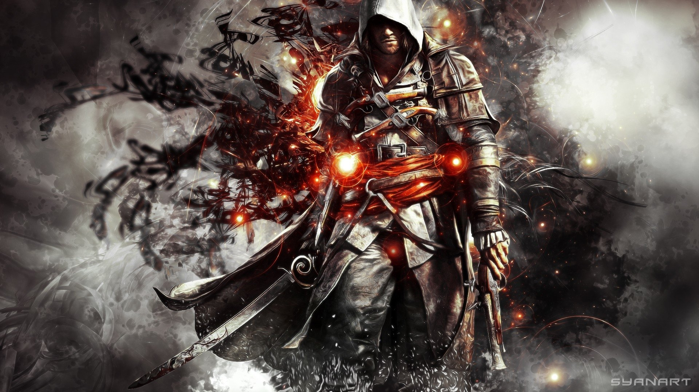
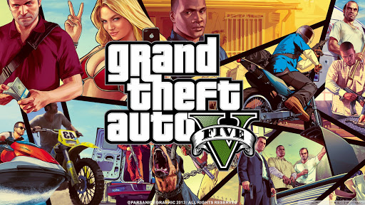

In the celebrated, controversial essays gathered here, Olu Oguibe exposes the disparities of the treatment afforded Western and non-Western artists. Ranging from the impact of the West’s appetite for difference on global cultural relations and the existence of a digital Third World to the African redefinition of modernity, Oguibe’s uncompromising criticism provides a global vision of contemporary art and culture.
Mario games are synonymous with fun and innovation, and perhaps Mario 64 is the best example of the
latter.
It gathered the core elements of Mario’s best 2D, side-scrolling adventures and worked out how to
translate
them into a groundbreaking 3D world. It was still recognisably Mario – he collected mushrooms and
ran
and
jumped his way to success, but he was forever changed. He could now long jump, triple jump, and
backflip.
While the underlying challenge remained the same and the locations were reassuringly familiar, the
shift
in
perspective changed everything.
What’s even more impressive is that Mario did not simply enter a new dimension with ease, he did it
with
style that few games unburdened with such technical challenges ever achieve. Mario 64 might now look
a
little blocky but it remains bold and brilliant, too.
If you're reading this list and haven't played Red Dead Redemption, go find
yourself a copy of the game
and
the appropriate console to play it on. Right now. We'll wait the 30+ hours –
this is important.
2008's GTA 4 may have been the reason that I bought an Xbox 360, but RDR is
the
reason I kept it. Not
only
did I get completely lost in the massive single-player world, to the point
where
I'd started talking
with a
bit of a drawl because I was so used to hearing it, but it also drew me into
online gaming unlike
anything
I'd played before. Sure, CoD was fun for a bit and racing games were okay,
but
never before had I so
successfully crafted my own stories and adventures (with friends and
strangers
alike) than in Red Dead's
Free Roam mode.
It was the kind of game you couldn't wait to discuss with your friends the
next
day. "Did you save that
woman on the train tracks?" "No, but I found this cabin that had, like,
1,000
cougars in it," "That's
cool,
but did you kill Sasquatch?" Everyone had their own amazing tales to tell
about
their time in the old
west,
and you were constantly making new ones every time you turned it on. The
only
real downside to Red Dead
is
that it never came out on PC – which is mostly sad because my 360 died years
ago
and I really want to
play
it again.
Half-Life 2 forever changed our
expectations for what a first-person
shooter
could be. Its richly
imagined
world and wonderfully paced gameplay is
a delight, never letting up and brimming
with invention. The
Gravity
Gun is obviously the poster child of
Half-Life 2, turning each environment
into
a tactile playground in
which you can create improvised weapons
and solve basic but clever physics
puzzles - and its importance
can’t be overstated - but there’s an
awful lot more here.
We’re introduced to Alyx Vance, a
supporting character with a rare warmth
and
intelligence. We’re
transported to an iconic city, where
Combine barricades loom with grim
authority, and Striders stalk the
streets with an otherworldly menace. We
get to set Antlions on our enemies and
in which we play fetch
with a
robot Dog. In short, it is a truly
memorable piece of game design.

The classic Russian title-matching puzzle game by Alexey Pajitnov blew my mind way back in the day.
Even as a little girl, I was obsessed with Tetris.
I’d never played a video game that mentally stimulating, let alone that addictive
I still remember spending hours sitting in front of the TV with the Nintendo Entertainment System
sitting at my feet,
rotating brightly colored puzzle pieces as they fell from the abyss,
attempting to arrange them into horizontal lines that when assembled correctly would disappear and
cause me to advance to the next stage.
It was crazy fun, even when blocks began to fall at an alarmingly fast pace and I fell into a
frenzied panic.
(I still remember how frustrated I’d get making careless mistakes that resulted in giant, pixelated
Towers of Pisa.)
But no matter how many times I had to start the game over, it was just too much fun to stop. There
was always the chance that this time I’d get the right puzzle piece at the right time and could move
on to the next stage.
I never got tired of it, and even now Tetris remains one of my favorite games of all time.
As a kid, I played almost any game that had a cool character on the box or starred my beloved Ninja Turtles. But even then, although I lacked the vocabulary to explain it, I knew that Super Mario Bros. was special, and better than almost everything else. So when I received Super Mario Bros. 3 from Santa one year, and saw on the back of the box that Mario could fly, I knew I was in for something special. The game exceeded my every hope and wish for it, and I spent hundreds of blissful afternoons defeating Koopa Kids, rescuing kings, and discovering secrets strewn throughout Mushroom World. Mario 3 earned a place on my list of favorite games way back in 1990, and 25 years of gaming progress have yet to dislodge it. Super Mario Bros. 3 is a textbook example of how to make a perfect video game sequel. It’s a mixture of the original’s best elements, combined with an almost excessive amount of imaginative new ideas. So much of what we consider so quintessentially Mario – the suits, the boos, the overworld – all actually originated here.
The Legend of Zelda: Breath of the Wild eschewed the semi-linear, borderline predictable path of the 3D Zelda games before it in favor of a bold, crazy new approach: let players do what they want, how they want, and in whatever order they decide. By marrying an open-ended approach to quest structure with the ability to freely explore a vast, beautiful, intriguing world with little specific regulation, the 3D Zelda game template was shattered about as fast as the average breakable weapon in Breath of the Wild. The result is a gorgeous, freeing open-world action/adventure experience that evokes the wonder and fear of exploring a bold new place with the empowering tangibility of becoming its hero.
Super Metroid’s minimalistic environmental storytelling set a bar, way back in 1994, that I believe has still yet to be eclipsed. The planet Zebes is atmospheric, oppressive, and extremely lethal. At first glance, there doesn’t even appear to be any story. But then you start to look more closely. The parasite-riddled dead soldier outside of an early boss room. The crashed, half-submerged alien spaceship that may or may not be haunted. The techno lair of the space pirates hiding under your nose the entire game. It’s brilliant and confident. It doesn’t explain to you what each new area is all about. It’s all there, for you to figure out (or ignore) on your own. But it’s Super Metroid’s ability to consistently invite the player to be curious – and then rewarding that curiosity – that makes it one of the greatest video games ever made. It’s not just that there are secrets hidden everywhere (although there are, and it’s awesome) – it’s that the game teases you with tantalizing clues – items, always just out of reach. An energy tank embedded in a seemingly impassable wall. A pair of missiles only obtainable from the collapsing blocks above, leaving you no idea of how to get up there, just with the knowledge that you can get up there. Super Metroid is an impeccable action-platformer – that’s the “easy” part. What makes it truly special is its genius combination of puzzle-solving, atmosphere, storytelling, exploration, game design, and gameplay. There’s nothing else like it.
IPortal undoubtedly came out of nowhere and shattered the mold, but Portal 2 took that raw and incredible concept and managed to shape it into a more polished and impressive package. It cranked the dials up on just about everything that made the original so special. The mind-bending puzzles, the surprisingly dark story, and the ridiculous humor that balanced it out - each piece of that picture was refined and refreshed to build a sequel that actually surpassed the ambition of an already extremely ambitious game, making something both familiar and altogether new. It gave us a deeper look into the wonderful world of Aperture Science without completely dragging all of its mysteries out into the light. It also mixed its “thinking with portals” puzzles up even further by weaving in gel mechanics that felt entirely fresh and completely natural at the same time - while simultaneously and subtly using them to tie gameplay mechanics into the story, patiently waiting until its incredible finale to pay off those setups with one of the weirdest and most spectacular video game endings around. Couple that with a seriously good co-op campaign and even a full-on custom level builder and sharing systems added post-launch and Portal 2 has stayed the high bar by which all first-person puzzle games should be measured, even nearly a decade later.
The Legend of Zelda and The Adventure of Link laid the foundations Link’s quest, but it was A Link to the Past that built the land of Hyrule into a world. From it’s unforgettable beginnings guiding a swordless Link through the rain, to the final showdown with Ganon and utilizing mastery of sword and bow to defeat evil, Link to the Past measured out a perfect pace of dungeons, exploration, and a gripping narrative that was almost unheard of at the time. It’s open landscape was always inviting but never felt aimless – striking the perfect balance of freedom and purpose in your quest to save Princess Zelda. This iteration of Hyrule was more than just moving between enemy-filled screens, it encompassed everything an immersive experience should be: a vast open world that teased you with secrets hiding just beyond your reach, begging you to come back with new and inventive tools. Each zone – whether in the cheerful overworld, dimly lit caves, or the intimidating Dark World – was brought to life through a culmination of details like the sound of the Tempered Sword cleaving the air, the catchy jingle of a puzzle well-solved, and the ambient tunes of Koji Kondo’s score. This version of Hyrule more than any other before or since, is the one I fell most in love with.

In nearly three decades no game has supplanted Super Mario World as the best game ever made... Which is stupid. I’ll get to that in a bit. Super Mario World is a relatively simple game to describe. It’s a Super Mario game, and we all know what that means: Mushrooms; perfect running and jumping action; and a giant world to explore, crammed with secrets. But what sets Super Mario World apart from other 2D Mario games is its irresistible complexity. Subsequent Super Mario games, like the New Super Mario Bros. series, simplified the overworld, trading Super Mario World’s cool hidden paths for linear tracks, largely abandoned the skies and treetops of Super Mario World’s vertical levels for ground-based obstacle courses, and did away with flying almost entirely (capes rule, helicopter hats drool!). Super Mario World is the crescendo to the slow build in technology and game design that started with Super Mario Bros. And that crescendo featured a cool, simulated 90s slap bass track. So look, we want to play a better game than Super Mario World. There’s no great, existential reason for Super Mario World to remain at the top of IGN’s list. Let Super Mario World’s placement on this list be a challenge to future game developers. We dare you to make a better game: Puzzling, but not opaque; tough but not intimidating; beautiful, funny, joyful, and universally recognizable. And, while we have your attention, dinosaurs are always a plus.